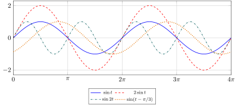
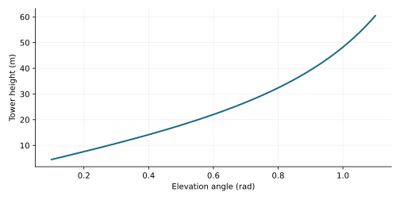

Applications of Trigonometry and Periodic Models
Opening context: measuring what cannot be reached
A clinician may infer a distance from imaging angles, a surveyor may estimate the width of a river without crossing it, and a researcher may model the daily rise and fall of a physiological signal. Trigonometry connects measurable angles and lengths to otherwise inaccessible quantities. In this chapter we move beyond graphing trigonometric functions to selecting, solving, and critically evaluating mathematical models.
Learning outcomes
After completing this chapter, students should be able to: (1) solve right and oblique triangles; (2) derive and use the Laws of Sines and Cosines; (3) recognize the ambiguous SSA case; (4) compute triangle area from two sides and an included angle; (5) model bearings, elevation, and navigation; (6) fit and interpret periodic models; (7) interpret units and assess uncertainty; and (8) implement equivalent investigations in R and Python.
Prerequisite check
Review exact unit-circle values (Chapter 8), sinusoidal graphs and transformations (Chapter 9), and trigonometric identities and equations (Chapter 10). Unless explicitly stated otherwise, angles in triangle problems are measured in degrees and arguments in computational trigonometric functions are converted to radians.
Working with R and Python
Each computational laboratory begins with a mathematical prediction and presents a complete R listing followed by a complete Python listing. The listings are sequential and full width. Numerical results should be checked against geometric constraints; software is a tool for investigation, not a substitute for mathematical reasoning.
Right-triangle review and choosing a ratio
For a right triangle with acute angle \(\theta\), the sine is opposite over hypotenuse, cosine is adjacent over hypotenuse, and tangent is opposite over adjacent. These ratios are independent of the size of a similar triangle. Before calculating, sketch the situation, label the known angle, and decide which ratio connects the known and unknown lengths. Inverse trigonometric functions recover an angle from a ratio, but the physical geometry determines which angle is meaningful.
Example 1. A ramp rises \(1.2\) m over a horizontal run of \(8.0\) m. Its angle of inclination satisfies \(\tan\theta=1.2/8.0=0.15\), hence \(\theta=\arctan(0.15)\approx8.53^\circ\). The ramp length is \(\sqrt{8^2+1.2^2}\approx8.09\) m.
Guided practice 1. A medical imaging platform rises 0.9 m over a horizontal run of 6 m. Find its angle and sloped length.
Reasoning checkpoint.
State the applicable formula, explain why it applies, show intermediate steps, and interpret the result with units and appropriate precision.
Angles of elevation and depression
An angle of elevation is measured upward from a horizontal line of sight; an angle of depression is measured downward. Parallel horizontal lines imply that an angle of depression from an observer equals the corresponding angle of elevation from a target. A correct diagram must distinguish the observer height from the height being estimated. For a level baseline \(d\) and vertical height difference \(h\), \(\tan\theta=h/d\).
Example 2. From a point \(30\) m from a building, the angle of elevation to its roof is \(38^\circ\). If the instrument is \(1.5\) m above ground, the building height is \(H=1.5+30\tan38^\circ\approx24.94\) m. Ignoring instrument height would systematically underestimate \(H\).
Guided practice 2. A technician observes the top of a tower at 27 degrees from a station 45 m away. The instrument is 1.7 m high. Find tower height.
Reasoning checkpoint.
State the applicable formula, explain why it applies, show intermediate steps, and interpret the result with units and appropriate precision.
Oblique triangles and notation
An oblique triangle has no right angle. Standard notation assigns sides \(a,b,c\) opposite angles \(A,B,C\), respectively. The interior angles sum to \(180^\circ\). The Law of Sines is efficient when an opposite side-angle pair is known; the Law of Cosines is efficient for SAS or SSS information. A common error is matching a side to an adjacent rather than opposite angle.
Example 3. In triangle \(ABC\), suppose \(A=50^\circ\), \(B=65^\circ\), and \(a=12\) cm. Then \(C=65^\circ\). The equal angles \(B\) and \(C\) imply \(b=c\); the Law of Sines will determine their common length.
Guided practice 3. Draw a triangle with A=42 degrees and B=73 degrees; identify C and which sides could be equal.
Reasoning checkpoint.
State the applicable formula, explain why it applies, show intermediate steps, and interpret the result with units and appropriate precision.
Deriving the Law of Sines
Drop an altitude \(h\) from vertex \(C\) to side \(AB\). When the altitude lies inside the triangle, \(h=b\sin A=a\sin B\), giving \(a/\sin A=b/\sin B\). Repeating with another altitude yields \[\boxed{\frac{a}{\sin A}=\frac{b}{\sin B}=\frac{c}{\sin C}}.\] The same relation remains valid for obtuse triangles because \(\sin(180^\circ-\theta)=\sin\theta\). The sine law relates opposite pairs, not neighboring ones.
Example 4. Given \(A=50^\circ\), \(B=65^\circ\), \(a=12\) cm, compute \(C=65^\circ\) and \(b=12\sin65^\circ/\sin50^\circ\approx14.20\) cm; similarly \(c\approx14.20\) cm. Both longer sides oppose larger angles, a useful reasonableness check.
Guided practice 4. Given A=35 degrees, B=75 degrees, and a=9 cm, determine C, b, and c.
Reasoning checkpoint.
State the applicable formula, explain why it applies, show intermediate steps, and interpret the result with units and appropriate precision.
The ambiguous SSA case
Knowing two sides and an angle opposite one of them (SSA) may yield zero, one, or two triangles. If \(A\) is acute, with known \(a\) opposite \(A\) and known adjacent side \(b\), the altitude is \(h=b\sin A\). When \(a<h\), no triangle exists; when \(a=h\), one right triangle exists; when \(h<a<b\), two triangles exist; when \(a\ge b\), one triangle exists. For an obtuse \(A\), a triangle is possible only if \(a>b\). An inverse-sine calculation gives a principal acute angle, but its supplement may also satisfy the original data.
Example 5. Let \(A=30^\circ\), \(a=7\), and \(b=10\). Then \(h=10\sin30^\circ=5\) and \(5<7<10\), so two triangles exist. Since \(\sin B=10\sin30^\circ/7=5/7\), \(B_1\approx45.58^\circ\) or \(B_2\approx134.42^\circ\). Both give positive remaining angles: \(C_1\approx104.42^\circ\) and \(C_2\approx15.58^\circ\).
Guided practice 5. For A=40 degrees, a=6, b=8, classify the SSA case and compute all possible B angles.
Reasoning checkpoint.
State the applicable formula, explain why it applies, show intermediate steps, and interpret the result with units and appropriate precision.
Deriving the Law of Cosines
Place a triangle in the coordinate plane with \(A=(0,0)\), \(B=(c,0)\), and \(C=(b\cos A,b\sin A)\). The squared distance from \(B\) to \(C\) is \[a^2=(b\cos A-c)^2+(b\sin A)^2=b^2+c^2-2bc\cos A.\] Therefore \(\boxed{a^2=b^2+c^2-2bc\cos A}\). Cyclic permutations produce formulas for \(b\) and \(c\). When \(A=90^\circ\), the cosine term vanishes, recovering the Pythagorean theorem.
Example 6. Two sides of a triangular plot measure \(8\) m and \(11\) m and enclose an angle of \(60^\circ\). The third side satisfies \(a^2=8^2+11^2-2(8)(11)\cos60^\circ=97\), so \(a=\sqrt{97}\approx9.85\) m.
Guided practice 6. Find the third side of a triangle with b=7, c=13, and A=110 degrees.
Reasoning checkpoint.
State the applicable formula, explain why it applies, show intermediate steps, and interpret the result with units and appropriate precision.
Solving SSS triangles
When all three side lengths are known, the Law of Cosines recovers an angle: \[\cos A=\frac{b^2+c^2-a^2}{2bc}.\] Check the triangle inequalities \(a+b>c\), \(a+c>b\), and \(b+c>a\) before using inverse cosine. The angle opposite the longest side must be the largest. Calculate two angles and obtain the third from the angle sum to reduce rounding error.
Example 7. For sides \(a=5\), \(b=7\), and \(c=9\), \(\cos C=(5^2+7^2-9^2)/(2\cdot5\cdot7)=-0.1\). Thus \(C\approx95.74^\circ\). The longest side \(c\) indeed opposes the obtuse angle.
Guided practice 7. Determine whether lengths 4, 6, 11 can form a triangle. Then find the largest angle for sides 6, 8, 10.
Reasoning checkpoint.
State the applicable formula, explain why it applies, show intermediate steps, and interpret the result with units and appropriate precision.
Area from trigonometry
The familiar area formula \(K=\tfrac12 bh\) becomes more useful when the height is not directly measured. If sides \(b\) and \(c\) enclose angle \(A\), the perpendicular height relative to \(c\) is \(b\sin A\), hence \[\boxed{K=\tfrac12bc\sin A=\tfrac12ac\sin B=\tfrac12ab\sin C}.\] This formula is valid for acute and obtuse included angles. Since sine is dimensionless, area units are the square of the length units.
Example 8. Two survey baselines of \(40\) m and \(55\) m meet at \(72^\circ\). The triangular area is \(K=\tfrac12(40)(55)\sin72^\circ\approx1046.16\) m\(^2\).
Guided practice 8. Find the area of a triangular field with sides 18 m and 25 m enclosing 125 degrees.
Reasoning checkpoint.
State the applicable formula, explain why it applies, show intermediate steps, and interpret the result with units and appropriate precision.
Bearings and navigation
A bearing is a direction relative to a reference axis. In many navigation contexts, an azimuth is measured clockwise from north: north is \(0^\circ\), east is \(90^\circ\), south is \(180^\circ\), and west is \(270^\circ\). For a displacement of magnitude \(d\) at azimuth \(\alpha\), east and north components are \(E=d\sin\alpha\) and \(N=d\cos\alpha\). State the convention before computing; measuring angles counterclockwise from east produces different component formulas.
Example 9. A research vessel travels \(12\) km on azimuth \(60^\circ\) and then \(8\) km on azimuth \(150^\circ\). Its east displacement is \(12\sin60^\circ+8\sin150^\circ\approx14.39\) km; north displacement is \(12\cos60^\circ+8\cos150^\circ\approx-0.93\) km. The resultant distance is approximately \(14.42\) km.
Guided practice 9. A drone travels 5 km at azimuth 30 degrees and 7 km at azimuth 120 degrees. Find its net east and north displacements.
Reasoning checkpoint.
State the applicable formula, explain why it applies, show intermediate steps, and interpret the result with units and appropriate precision.
Triangulation and indirect measurement
Triangulation uses a known baseline and two observed directions to locate an inaccessible point. Suppose stations \(A\) and \(B\) are \(d\) units apart and the measured interior angles toward target \(T\) are \(A\) and \(B\). Then \(T=180^\circ-A-B\) and \[AT=\frac{d\sin B}{\sin T},\qquad BT=\frac{d\sin A}{\sin T}.\] Small changes in angles can have large effects when \(T\) is near zero; nearly collinear sight lines make triangulation unstable.
Example 10. Stations \(A\) and \(B\) are \(100\) m apart. The angles to a landmark are \(A=48^\circ\) and \(B=67^\circ\). Then \(T=65^\circ\) and \(AT=100\sin67^\circ/\sin65^\circ\approx101.57\) m.
Guided practice 10. A baseline is 80 m with observed base angles 55 and 60 degrees. Find both distances to the target.
Reasoning checkpoint.
State the applicable formula, explain why it applies, show intermediate steps, and interpret the result with units and appropriate precision.
Periodic phenomena and model parameters
A sinusoidal model has the form \[y(t)=D+A\sin\!\left(\frac{2\pi}{P}(t-h)\right),\] where \(D\) is the midline, \(|A|\) the amplitude, \(P>0\) the period, and \(h\) a horizontal shift. For a measured maximum \(M\) and minimum \(m\), estimate \(D=(M+m)/2\) and \(|A|=(M-m)/2\). A peak-to-peak interval estimates \(P\). The units of \(2\pi/P\) are radians per unit time.
Example 11. A simplified temperature pattern ranges from \(36.5^\circ\)C to \(37.5^\circ\)C over a 24-hour cycle. Its midline is \(37.0^\circ\)C and amplitude is \(0.5^\circ\)C. A candidate model is \(T(t)=37+0.5\sin(2\pi t/24)\), provided \(t=0\) corresponds to a midline upward crossing.
Guided practice 11. A periodic measurement varies from 62 to 78 units every 12 hours. State its midline, amplitude, angular frequency, and one possible sine model.
Reasoning checkpoint.
State the applicable formula, explain why it applies, show intermediate steps, and interpret the result with units and appropriate precision.
Determining phase from data
A periodic curve cannot be specified by amplitude and period alone. The phase determines where maxima, minima, and midline crossings occur. For a cosine model with a maximum at \(t=t_{\max}\), a convenient form is \(y(t)=D+A\cos[2\pi(t-t_{\max})/P]\) with \(A>0\). If the observation starts at a minimum, use a negative cosine or shift by half a period. More than one algebraic representation can describe the same function.
Example 12. A laboratory sensor has maximum reading \(8\) at \(t=2\) s, minimum \(2\), and period \(10\) s. Then \(D=5\), \(A=3\), and \(S(t)=5+3\cos[2\pi(t-2)/10]\). At \(t=2\), the cosine is \(1\), giving the required maximum.
Guided practice 12. A respiration model has minimum 10 at t=3 s, maximum 18, and period 8 s. Write a cosine model.
Reasoning checkpoint.
State the applicable formula, explain why it applies, show intermediate steps, and interpret the result with units and appropriate precision.
Fitting a sinusoidal model and checking residuals
A model fitted to data should be judged by its residuals \(e_i=y_i-\widehat y_i\). Random-looking residuals of modest magnitude support the model’s descriptive usefulness; systematic waves or drifting residuals suggest missing structure. The root-mean-square error is \(\mathrm{RMSE}=\sqrt{n^{-1}\sum_i e_i^2}\). A small RMSE does not guarantee valid extrapolation. For known period \(P\), rewrite \(D+A\sin(\omega t+\phi)\) as \(D+B\sin(\omega t)+C\cos(\omega t)\), where \(\omega=2\pi/P\). This is linear in the coefficients \(D,B,C\) and can be fitted by least squares.
Example 13. Suppose a 24-hour cycle is modeled by \(y(t)=70+6\sin(2\pi t/24)+2\cos(2\pi t/24)\). The amplitude is \(\sqrt{6^2+2^2}=\sqrt{40}\approx6.32\). Its phase \(\phi=\operatorname{atan2}(2,6)\), since \(B=A\cos\phi\) and \(C=A\sin\phi\).
Guided practice 13. Given B=4 and C=-3 in a harmonic model, compute amplitude and phase, and explain the role of atan2.
Reasoning checkpoint.
State the applicable formula, explain why it applies, show intermediate steps, and interpret the result with units and appropriate precision.
Model limitations, uncertainty, and units
A trigonometric formula is an idealization. Physical signals can have noise, changing amplitude, drift, irregular cycles, or abrupt events. A predicted value should be reported with appropriate units and precision, and parameter uncertainty should be acknowledged. When measuring a distance \(d=h/\tan\theta\), small angular errors are especially influential for shallow angles. Compare predictions under plausible alternative measurements rather than reporting an implausibly precise answer.
Example 14. At an elevation angle of \(20^\circ\), a horizontal distance estimate for a height difference of \(10\) m is \(d=10/\tan20^\circ\approx27.47\) m. If the angle is \(19^\circ\) or \(21^\circ\), the estimates are approximately \(29.04\) m and \(26.05\) m. A one-degree error changes the inferred distance substantially.
Guided practice 14. Estimate the distance to a 15 m-high target using angles of elevation 24, 25, and 26 degrees. Discuss sensitivity.
Reasoning checkpoint.
State the applicable formula, explain why it applies, show intermediate steps, and interpret the result with units and appropriate precision.
Preparation for calculus: instantaneous change
For \(y(t)=D+A\sin(\omega t+\phi)\), the average rate of change over \([t,t+h]\) is \([y(t+h)-y(t)]/h\). By the angle-addition identity, the numerator can be rearranged into terms involving \(\sin(\omega h)\) and \(\cos(\omega h)-1\). Calculus shows that the instantaneous rate is \(y'(t)=A\omega\cos(\omega t+\phi)\) when \(t\) is measured in compatible units. The derivative is largest in magnitude at midline crossings and zero at smooth maxima and minima.
Example 15. For \(y(t)=5+2\sin(\pi t/6)\), the instantaneous rate at \(t=0\) is \(y'(0)=2(\pi/6)\cos0=\pi/3\) units per second. The factor \(\pi/6\) is essential: omitting it confuses amplitude with rate.
Guided practice 15. Write the average rate of change for y(t)=10+3 cos(pi t/4) over [0,h], and predict the limiting value.
Reasoning checkpoint.
State the applicable formula, explain why it applies, show intermediate steps, and interpret the result with units and appropriate precision.
Visual investigations
Investigation 1: Altitude and the Law of Sines
Draw an oblique triangle with \(A=40^\circ\), \(B=65^\circ\), and baseline \(c=8\). Drop an altitude from \(C\) and label the two right triangles. Derive the Law of Sines from the two expressions for the altitude. Explain how the derivation extends to an obtuse triangle.
Investigation 2: Two triangles from the same SSA measurements
Construct a ray making \(30^\circ\) with a horizontal baseline. Mark a fixed side of length \(10\) along the baseline, then draw a circle of radius \(7\) centered at its endpoint. Explain why the circle intersects the ray twice. Compare both possible triangles with the numerical calculations in Section 5.
Investigation 3: The cosine rule as a distance formula
Plot \(A=(0,0)\), \(B=(6,0)\), and \(C=(4\cos60^\circ,4\sin60^\circ)\). Use the distance formula to calculate \(BC\) and compare with the Law of Cosines. Repeat with \(A=120^\circ\) and describe the effect of an obtuse included angle.
Investigation 4: Triangulation and near-parallel sight lines
Fix baseline \(AB=100\) m. Compare target distances when \((A,B)=(50^\circ,60^\circ)\) and when \((A,B)=(5^\circ,6^\circ)\). Which arrangement is more sensitive to small angular errors? Support your conclusion with calculations.
Investigation 5: Changing amplitude, period, and phase
On one set of axes graph \(\sin t\), \(2\sin t\), \(\sin(2t)\), and \(\sin(t-\pi/3)\) over \(0\le t\le4\pi\). For each curve identify amplitude, period, and first positive maximum. Explain why a horizontal shift is not the same as a vertical shift.

Investigation 6: A periodic health-science measurement
A simulated physiological signal follows \(R(t)=16+3\cos[2\pi(t-2)/8]\) cycles per minute. Determine its range, period, and first maximum. Construct a table at one-second intervals, graph the result, and explain why the model should not be used to make clinical decisions without validation.
Investigation 7: Residual patterns
Generate observations from a sinusoid with a slowly increasing trend. Fit a pure sinusoid and plot residuals versus time. Describe the pattern. Explain why an apparently good fit can still omit a scientifically important process.
Extended applied workshops
Workshop A: Indirect height measurement
Two observation stations lie on level ground \(35\) m apart. From the farther station the angle of elevation to a tower top is \(28^\circ\); from the nearer station it is \(41^\circ\). Both instruments are \(1.6\) m high. Let \(x\) be the horizontal distance from the nearer station to the tower. (a) Draw and label a diagram. (b) Derive \(x\tan41^\circ=(x+35)\tan28^\circ\). (c) Solve for \(x\) and the tower height. (d) Describe how a one-degree angle error might affect the result.
Workshop B: Navigating to a research site
A field team travels \(9\) km at azimuth \(35^\circ\) and then \(13\) km at azimuth \(125^\circ\). (a) Calculate east and north components. (b) Find straight-line distance from the starting point. (c) Determine the return azimuth. (d) Explain why a diagram without an angle convention can be misleading.
Workshop C: Triangle ambiguity in imaging geometry
An idealized imaging setup has \(A=35^\circ\), opposite length \(a=7\) cm, and adjacent length \(b=10\) cm. (a) Compute the altitude. (b) Determine whether zero, one, or two triangles are possible. (c) Solve for each feasible triangle. (d) Explain why an inverse-sine calculator result alone is insufficient.
Workshop D: A periodic environmental sensor
An environmental monitor has a minimum of \(12\) units at 3 AM and maximum of \(28\) units at 3 PM. Assume a 24-hour cycle. (a) Determine amplitude and midline. (b) Write a cosine model using hours after midnight. (c) Predict the reading at 9 AM. (d) Identify the times at which the model crosses its midline. (e) Discuss why real observations may deviate.
Workshop E: Harmonic regression
At times \(t=0,3,6,9,12,15,18,21\) hours, simulated readings are \([72,77,80,76,70,65,64,68]\). (a) Plot the data. (b) Fit \(D+B\sin(2\pi t/24)+C\cos(2\pi t/24)\). (c) Report amplitude and phase. (d) Plot residuals and calculate RMSE. (e) Explain why a single day of data cannot establish a stable long-term biological cycle.
Computational Laboratory A: Solving triangles and checking ambiguity
Before coding. Predict how many triangles are possible for \(A=30^\circ\), \(a=7\), \(b=10\). Explain the altitude test. Run the R listing, then the Python listing, and compare both sets of angles.
R code
# Laboratory A: the ambiguous SSA case
A <- 30 * pi / 180; a <- 7; b <- 10
s <- b * sin(A) / a
if (abs(s) > 1) { print("No triangle") } else {
B_candidates <- c(asin(s), pi - asin(s))
for (B in B_candidates) {
C <- pi - A - B
if (C > 0) {
c_side <- a * sin(C) / sin(A)
cat(sprintf("B=%.2f deg, C=%.2f deg, c=%.3f\n",
B*180/pi, C*180/pi, c_side))
}
}
}Python code
# Laboratory A: the ambiguous SSA case
import math
A = math.radians(30); a = 7; b = 10
s = b * math.sin(A) / a
if abs(s) > 1:
print("No triangle")
else:
for B in (math.asin(s), math.pi - math.asin(s)):
C = math.pi - A - B
if C > 0:
c_side = a * math.sin(C) / math.sin(A)
print(f"B={math.degrees(B):.2f} deg, "
f"C={math.degrees(C):.2f} deg, c={c_side:.3f}")Interpretation. Why do two values of \(B\) satisfy the sine law? How can you reject an angle when the sum of interior angles would exceed \(180^\circ\)?
Computational Laboratory B: Navigation and triangulation
Before coding. Predict the signs of east and north displacement for an azimuth of \(150^\circ\). Compare a component-based solution with a triangle-based solution.
R code
# Laboratory B: navigation and triangulation
d <- c(12, 8); az <- c(60, 150) * pi / 180
east <- sum(d * sin(az)); north <- sum(d * cos(az))
distance <- sqrt(east^2 + north^2)
azimuth <- (atan2(east, north) * 180 / pi) %% 360
cat(sprintf("East=%.3f, North=%.3f km\n", east, north))
cat(sprintf("Distance=%.3f km, azimuth=%.2f deg\n", distance, azimuth))
baseline <- 100; A <- 48*pi/180; B <- 67*pi/180
T <- pi-A-B
cat(sprintf("AT=%.3f m, BT=%.3f m\n",
baseline*sin(B)/sin(T), baseline*sin(A)/sin(T)))Python code
# Laboratory B: navigation and triangulation
import math
legs = [(12, 60), (8, 150)]
east = sum(d*math.sin(math.radians(az)) for d,az in legs)
north = sum(d*math.cos(math.radians(az)) for d,az in legs)
distance = math.hypot(east, north)
azimuth = math.degrees(math.atan2(east, north)) % 360
print(f"East={east:.3f}, North={north:.3f} km")
print(f"Distance={distance:.3f} km, azimuth={azimuth:.2f} deg")
A, B = map(math.radians, (48, 67))
T = math.pi-A-B; baseline = 100
print(f"AT={baseline*math.sin(B)/math.sin(T):.3f} m, "
f"BT={baseline*math.sin(A)/math.sin(T):.3f} m")Interpretation. Explain how the coordinate convention determines the sine and cosine assignments. How would uncertainty in bearings affect the final location?
Computational Laboratory C: Fitting and evaluating a periodic model
Before coding. For a 24-hour signal, compute angular frequency and predict the qualitative shape of a residual plot when the observations include a trend.
R code
# Laboratory C: periodic regression and residuals
t <- seq(0, 23, by=1); omega <- 2*pi/24
set.seed(11)
y <- 70 + 6*sin(omega*t) + 2*cos(omega*t) +
0.12*t + rnorm(length(t), sd=0.5)
fit <- lm(y ~ sin(omega*t) + cos(omega*t))
co <- coef(fit); B <- co[2]; C <- co[3]
amp <- sqrt(B^2+C^2); phase <- atan2(C,B)
rmse <- sqrt(mean(residuals(fit)^2))
cat(sprintf("Midline=%.3f, amplitude=%.3f, phase=%.3f rad, RMSE=%.3f\n",
co[1],amp,phase,rmse))
png("periodic_fit_R.png",width=900,height=500)
plot(t,y,pch=16,xlab="Time (hours)",ylab="Sensor reading")
lines(t,fitted(fit),col="blue",lwd=2)
dev.off()
png("periodic_residuals_R.png",width=900,height=500)
plot(t,residuals(fit),pch=16,xlab="Time (hours)",ylab="Residual")
abline(h=0,lty=2)
dev.off()Python code
# Laboratory C: periodic regression and residuals
import numpy as np
import matplotlib.pyplot as plt
rng = np.random.default_rng(11)
t = np.arange(24, dtype=float); omega = 2*np.pi/24
y = 70 + 6*np.sin(omega*t) + 2*np.cos(omega*t) + 0.12*t
y = y + rng.normal(0, 0.5, len(t))
X = np.column_stack((np.ones(len(t)), np.sin(omega*t), np.cos(omega*t)))
D, B, C = np.linalg.lstsq(X, y, rcond=None)[0]
fitted = X @ np.array([D,B,C]); residuals = y-fitted
amp = np.hypot(B,C); phase = np.arctan2(C,B)
rmse = np.sqrt(np.mean(residuals**2))
print(f"Midline={D:.3f}, amplitude={amp:.3f}, "
f"phase={phase:.3f} rad, RMSE={rmse:.3f}")
plt.figure(figsize=(8,4)); plt.scatter(t,y,label="Observed")
plt.plot(t,fitted,label="Fitted"); plt.xlabel("Time (hours)")
plt.ylabel("Sensor reading"); plt.legend(); plt.tight_layout()
plt.savefig("periodic_fit_python.png",dpi=160); plt.close()
plt.figure(figsize=(8,4)); plt.scatter(t,residuals)
plt.axhline(0,ls="--"); plt.xlabel("Time (hours)")
plt.ylabel("Residual"); plt.tight_layout()
plt.savefig("periodic_residuals_python.png",dpi=160); plt.close()Interpretation. Compare the fitted amplitude, midline, and RMSE. Identify limitations of a one-period fit and explain why a smooth-looking curve does not imply a validated clinical model.
A step-by-step problem-solving clinic
Case study 1: Selecting the correct triangle law
A team measures two sides of a triangular study region as \(14\) m and \(19\) m, with an included angle of \(47^\circ\). The goal is to determine the remaining side and the area. Step 1: Organize information. The angle is between the known sides, so the data are SAS. Step 2: Choose a method. The Law of Cosines determines the third side, and the sine area formula gives the area directly. Step 3: Set up exact expressions: \[a=\sqrt{14^2+19^2-2(14)(19)\cos47^\circ},\qquad K=\frac12(14)(19)\sin47^\circ.\] Step 4: Check. The third side must lie between \(19-14=5\) m and \(19+14=33\) m. The area must be less than \(\tfrac12(14)(19)=133\) m\(^2\) because \(\sin47^\circ<1\). Step 5: Interpret. Report the results with units and precision consistent with the measurements. Try it: Repeat the calculations with the included angle increased to \(48^\circ\) and compare sensitivity.
Case study 2: A model with a delayed maximum
A simulated sensor oscillates between \(30\) and \(50\) units with a period of \(12\) minutes. Its maximum occurs at \(t=4\) minutes. Step 1: Determine parameters. \(D=(50+30)/2=40\), \(A=(50-30)/2=10\), and \(\omega=2\pi/12=\pi/6\) radians per minute. Step 2: Align phase. A cosine reaches its maximum when its argument is zero, so \[S(t)=40+10\cos\left[\frac{\pi}{6}(t-4)\right].\] Step 3: Verify. \(S(4)=50\); six minutes later, \(S(10)=30\). Step 4: Solve a threshold question. \(S(t)=45\) means \(\cos[\pi(t-4)/6]=1/2\). Thus \(\pi(t-4)/6=\pm\pi/3+2k\pi\), or \(t=4\pm2+12k\). Over \([0,12)\) the crossings are \(t=2\) and \(t=6\) minutes. Try it: Determine all crossings of the midline over \([0,24)\).
Case study 3: Interpreting uncertainty rather than hiding it
A target is observed from a horizontal distance of \(25\) m at an elevation angle reported as \(30^\circ\pm1^\circ\). The instrument is \(1.5\) m above the ground. A central estimate for height is \(H=1.5+25\tan30^\circ\). To represent the stated angular uncertainty, compute \(H_{\min}=1.5+25\tan29^\circ\) and \(H_{\max}=1.5+25\tan31^\circ\). Explain why the central estimate alone would imply more certainty than the measurement supports. Try it: Repeat for a distance of \(50\) m and compare the width of the height interval.
Common errors and diagnostic questions
Degrees versus radians: A student evaluates \(\sin30\) on a calculator set to radians and concludes that the Law of Sines is incorrect. Identify the error and explain how to prevent it in both R and Python.
Mismatched sides and angles: A student writes \(a/\sin B=b/\sin A\). Draw a labeled triangle and correct the expression.
Lost SSA solution: A student reports only \(B=\arcsin(5/7)\) in the ambiguous-case example. Explain the second candidate and the angle-sum check.
Unclear bearing convention: Two students obtain different eastward displacements from the same stated angle. Explain how defining the zero direction and positive rotation resolves the disagreement.
Period confused with frequency: A model has \(\omega=\pi/4\) rad/s. Explain why its period is \(8\) seconds rather than \(4\) seconds.
Overinterpreting a fitted curve: A sinusoidal model closely matches 24 simulated measurements. Explain why this does not prove that a physiological process is exactly periodic.
Chapter review and self-assessment
Instructions. Show calculations, draw diagrams where appropriate, and give units. Use exact values when possible and round measured results appropriately.
A ladder of length 5 m makes an angle of \(68^\circ\) with the ground. Find its vertical reach.
A ramp rises 0.75 m over a run of 9 m. Find its slope angle.
An observer 40 m from a building measures an elevation angle of \(33^\circ\) from a height of 1.5 m. Estimate building height.
In triangle \(ABC\), \(A=42^\circ\), \(B=68^\circ\), and \(a=11\). Find \(C,b,c\).
Determine the number of triangles for \(A=25^\circ\), \(a=4\), \(b=9\).
Determine the number of triangles for \(A=30^\circ\), \(a=6\), \(b=10\).
Solve all possible triangles with \(A=40^\circ\), \(a=8\), \(b=10\).
Explain why \(\arcsin\) alone cannot resolve every SSA triangle.
Two sides of length 7 and 12 enclose \(55^\circ\). Find the third side.
Find the angle opposite side 13 in a triangle with sides 5, 12, 13.
Determine whether lengths 3, 5, 9 form a triangle.
Find the area of a triangle with sides 14 and 18 enclosing \(75^\circ\).
Find the area of a triangle with sides 8 and 9 enclosing \(120^\circ\).
Derive the Law of Cosines from the distance formula.
Explain how the Pythagorean theorem is a special case of the Law of Cosines.
A ship travels 10 km at azimuth \(45^\circ\). Find its east and north components.
A drone travels 4 km at \(90^\circ\) then 3 km at \(180^\circ\). Find resultant distance and azimuth.
A survey baseline is 120 m with sight-line angles \(52^\circ\) and \(61^\circ\). Find both target distances.
Explain why nearly parallel sight lines are undesirable for triangulation.
A periodic signal has maximum 20, minimum 8, and period 6 s. Find amplitude, midline, and angular frequency.
Write a cosine model with maximum 15 at \(t=3\) and minimum 5 at \(t=7\), assuming the maximum and minimum are consecutive.
For \(y=3+2\sin(\pi t/4)\), find range and period.
Find the first positive maximum of \(y=10+4\cos[\pi(t-2)/6]\).
Convert \(D+4\sin(\omega t)-3\cos(\omega t)\) to amplitude-phase form.
Explain why \(\operatorname{atan2}\) is preferable to ordinary arctangent for determining phase.
Define a residual and RMSE in a periodic model.
Describe two residual patterns that suggest model misspecification.
A model estimates a 10 m height difference using an elevation angle of \(15^\circ\). Calculate horizontal distance.
Recalculate the preceding distance for \(14^\circ\) and \(16^\circ\); discuss uncertainty.
For \(y=2+3\sin(\pi t/5)\), write a difference quotient and predict its derivative at \(t=0\).
Calculus-readiness checkpoint
Explain why radians are the natural units in the derivative of a sine function. For \(y(t)=D+A\sin(\omega t+\phi)\), identify the units of \(A\), \(\omega\), and \(y'(t)\). Explain geometrically why a sinusoid’s rate of change vanishes at its peaks and troughs. Finally, describe how the secant-slope idea from Chapter 3 connects to the instantaneous rate of change of a periodic model.
Looking ahead
Chapter 12 turns to sequences and series. Periodic signals can be sampled at equally spaced times, producing numerical sequences; patterns in those samples can reveal both useful structure and misleading aliases.
Extended application: Indirect height measurement
A surveyor stands 30 meters from a vertical tower on level ground. The instrument is 1.5 meters above the ground. The quantities in this investigation are illustrative rather than measured observations.
Formulating the mathematical model
The proposed relationship is \[H(\theta)=1.5+30\tan\theta.\] Before calculating, identify the input and output, their units, and the interval on which the model is being studied. Distinguish the mathematical domain from the practical domain. The numerical study uses inputs from \(0.1\) to \(1.1\).
Example 16: Analytical investigation. Find the height for \(\theta=\pi/4\). Explain why angles close to \(\pi/2\) make the estimate sensitive.
Worked solution. Height 31.5 m. Tangent grows without bound near \(\pi/2\), so small angle errors can cause large height errors.
Connecting numerical and graphical representations
| Elevation angle (rad) | Tower height (m) |
|---|---|
| 0.1 | 4.51 |
| 0.35 | 12.45 |
| 0.6 | 22.02 |
| 0.85 | 35.65 |
| 1.1 | 60.44 |

Interpretation. Compare the tabulated values with the graph. Identify the intervals over which the output increases or decreases, and distinguish a sampled extremum from an exact analytical extremum. Explain whether interpolation and extrapolation have the same justification in this setting.
R implementation
The following standalone script defines the model, generates predictions, and draws a labeled graph. Read the formula before running the code. The sampled range is a numerical diagnostic, not a proof of the exact range.
# Applied investigation: Indirect height measurement
# 1. Define the input domain and model
x <- seq(0.1, 1.1, length.out = 301)
y <- 1.5+30*tan(x)
# 2. Inspect numerical predictions
idx <- unique(round(seq(1, length(x), length.out = 5)))
print(data.frame(input = x[idx], output = y[idx]))
# 3. Visualize the model with labeled axes
plot(x, y, type = "l", lwd = 2, col = "#176B87",
xlab = "Elevation angle (rad)", ylab = "Tower height (m)")
grid()
# 4. Check the sampled output range
print(range(y))Python implementation
Repeat the same investigation using NumPy arrays and Matplotlib. Compare the printed predictions with the R output, allowing for rounding.
# Applied investigation: Indirect height measurement
import numpy as np
import matplotlib.pyplot as plt
# 1. Define the input domain and model
x = np.linspace(0.1, 1.1, 301)
y = 1.5+30*np.tan(x)
# 2. Inspect numerical predictions
idx = np.unique(np.linspace(0, len(x)-1, 5).round().astype(int))
print(np.column_stack((x[idx], y[idx])))
# 3. Visualize the model with labeled axes
fig, ax = plt.subplots(figsize=(7, 3.6))
ax.plot(x, y, "-", color="#176B87", linewidth=2)
ax.set(xlabel="Elevation angle (rad)", ylabel="Tower height (m)")
ax.grid(alpha=0.22)
ax.spines[["top", "right"]].set_visible(False)
fig.tight_layout()
plt.show()
# 4. Check the sampled output range
print(np.min(y), np.max(y))Guided practice: checking the model
Calculate the outputs at the two endpoints by hand. Compare them with the numerical table.
Select an interior input not listed in the table. Predict the output before evaluating it in either language.
Explain the meaning of the difference between the two endpoint outputs, including units. If appropriate, calculate the average rate of change.
Identify a physical assumption of the model and describe a circumstance in which it would fail.
Chapter project: investigating Indirect height measurement
Prepare a short technical report for a reader who has not studied the model. Use the preceding case as a starting point, but develop your own investigation rather than merely reproducing the worked example.
State a quantitative question that can be answered using the model. Define all variables, units, and restrictions.
Modify one meaningful numerical parameter in the formula. Explain what the change represents in the original context. Derive the revised formula and predict the direction of change before computing.
Compare the original and revised models at five common admissible inputs. Present a labeled table and explain the largest difference in the table.
Produce a graph containing both models on the same axes. Use a legend and distinguish the curves with line styles or markers. Explain the shape and any intersections.
Solve your quantitative question algebraically where possible. Verify the result using R and Python; report any differences due to numerical precision.
Discuss at least two limitations. Describe what measurements would be needed to assess the model in practice. Do not present simulated predictions as empirical evidence.
Project deliverables and assessment
Submit a two- to three-page report, the two runnable scripts, and the labeled figure. The report should stand on its own without requiring the reader to inspect the code.
| Criterion | Points |
|---|---|
| Mathematical formulation and domain | 20 |
| Analytical reasoning and verification | 25 |
| Reproducible R and Python computations | 20 |
| Graph and table quality | 15 |
| Interpretation and limitations | 20 |
| Total | 100 |
Companion scripts


Interactive investigation: Periodic temperature model
Enable JavaScript to explore the model.
Explore and explain: Predict the daily maximum, minimum and their times.